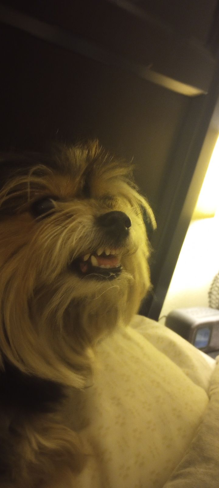
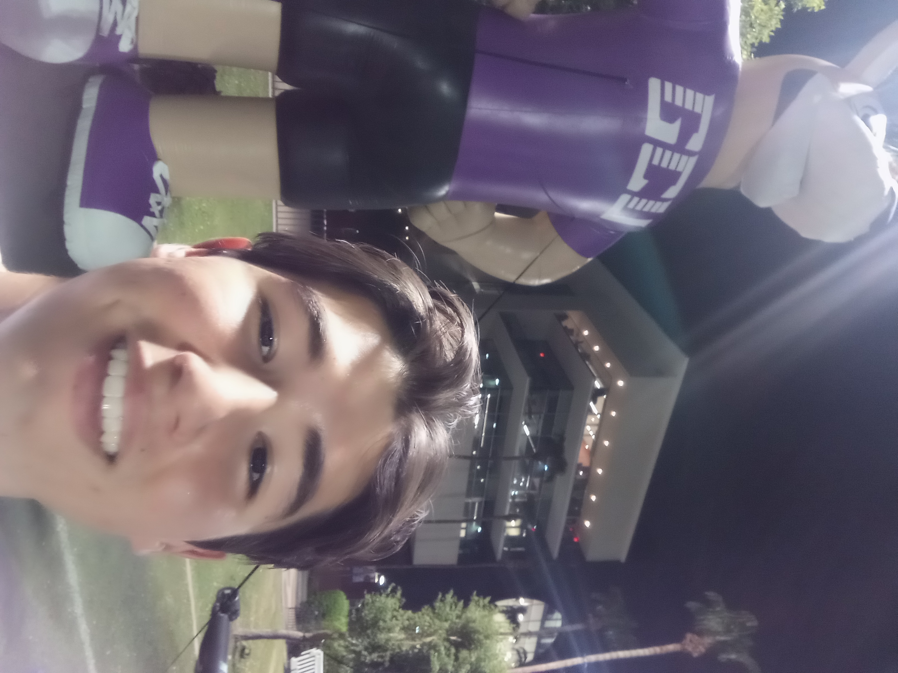

HOME
|
HOBBIES
|
EVENTS/HISTORY
|
PHOTOS AND VIDEOS
|
PLACES I'VE TRAVELED
|
CHRISTIAN WORLDVIEW
|
CONTACT INFO
🐶 More About My Events 🎓
- Hover over these boxes to get a reaction!
Childhood
I am an only child who lived with my mom and dad before college. I am from Orange County, California.
My family currently has one dog named Izzy, but we have had 1 dog, four cats, and a handful of goldfish in the past.
I enjoyed playing
baseball
from ages 6-16, and I still enjoy watching the game as it's my favorite sport.
I also played sports in my childhood such as flag football, basketball, and track and field.
I went to a private school up to 8th grade, other than college.
I excelled in school, participating in spelling bees, math & science olympics, and speech meets.
High School
I attended Villa Park High School for all 4 years I was in highschool.
I participated in their baseball program for 2 seasons and various events.
During my junior and senior year, I worked at a Chipotle near my house as my first work experience.
I took various computer related classes, but didn't get much hands-on experience at this point in my life.
I maintained academic success and achieved credit from various AP classes.
I got a girlfriend my senior year and attended prom with her; we are together to this day.
College/Future
I am currently attending Grand Canyon University with a Major in Software Development.
This semester-long project is from my freshman class, Introduction to Web Development.
I am currently involved in two clubs as well as a research program and plan to get involved more.
I plan to take part in summer internships each summer to improve my knowledge and experience.
I am set on joining the technology industry in hopes of getting a well-rounded and well-paying job.
I want to make a change in this world with my primary goal being to provide convenience to as many people as possible throughout my life.
Go Back Home